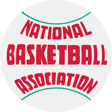
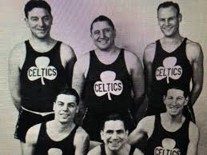
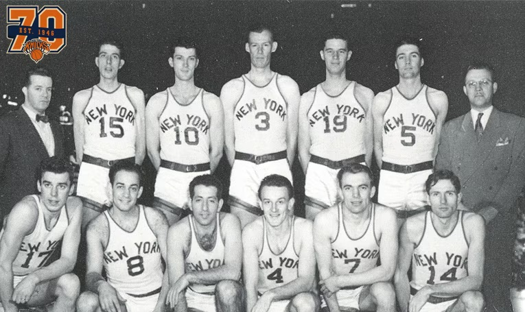
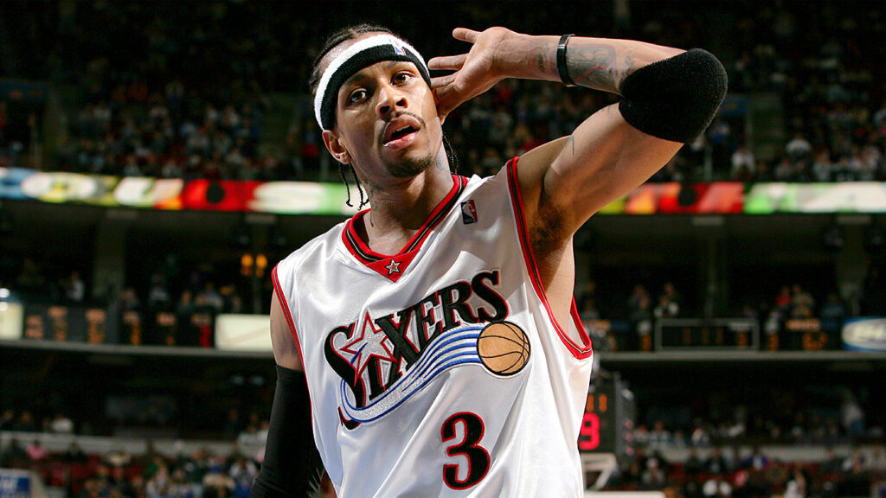
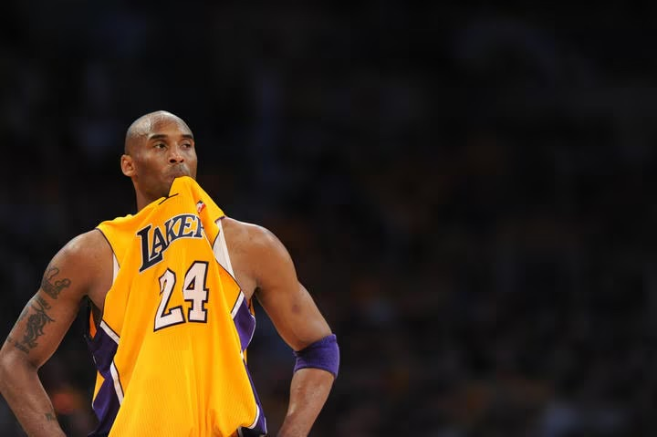
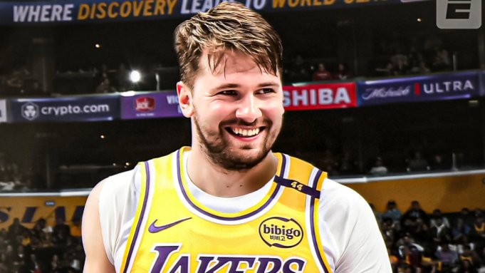

Basketball is a sport that brings people together, transcending race, gender, and background. It is as an art form; poetry in motion. From smooth layups to stellar defense and gravity defying dunks, the game unites fans across the globe. But where did it all begin?
The Birth of the NBA
The National Basketball Association (NBA) was founded on June 6, 1946, in New York City. Originally known as the Basketball Association of America (BAA), it later merged with the National Basketball League (NBL) in 1949 to form the modern NBA. The league’s creation marked a new era in professional basketball, elevating it to become one of the most globally recognized sports.
Historic Beginnings
In one of the most impactful stadiums in all of basketball, The Garden played a crucial role in the league we all love today—the NBA. Founded on June 6, 1946, it led to a drastic change in the world of sports. The birth of the game continues to draw people to its core. Two of the original 11 teams created during this period remain among the most distinguished in NBA history.
The winningest franchise in NBA history, the Boston Celtics, and the founding organization that helped spark the game’s growth, the New York Knicks, continue to shape the league's legacy.
 The NBA's Cultural Influence
As the NBA grew, it became more than just a sports league it became a global phenomenon. Through Allen Iverson's swag on and off the court, to Kobe's stylish shoes, to Lebron Jame's legendary Jersey, players have become cultural icons and ambassadors for change. The game’s fast-paced style yet entertainment value have captivated audiences worldwide.
 The NBA on the World Stage
The league continues to evolve without bonderies through international expansion, global broadcasts, and the rise of international superstars such as Luka, the NBA has built a
fanbase that spans continents. Events like these have allowed the NBA to be Basketball Without Borders strgthening
the league’s connection with fans around the world.

Innovation and the Modern NBA
The league continues to evolve, embracing technological advancements, analytics, and new styles of play. The three-point revolution and positionless basketball have redefined the game, keeping it dynamic and exciting for new generations of fans.
With this continuous evolution, the NBA has also continued to gain traction turning the game basketball into a global brand. From social media campaigns to international sponsorships, the league's outreach is stronger than ever.
Top Jerseys in the League.
Hottest Kicks